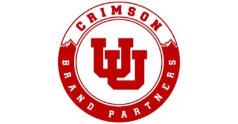
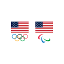

TODAY'S AGENDA.
THE ADVISORY GROUP.
THE TEAM.
BEST SPORTS CITIES RANKINGS.
AT THE CENTER OF THE CAMPUS.
Sport management was a Top 10 U.S. job in 2023, median $88,720, with about 99,000 openings a year through 2034.
of SportsThe Minor
Credits
PROGRAM STRUCTURE.
- Sports Business Leadership Speaker Series
- Marketing Vision or Principles of Marketing
- Intro to Sports Business
- Sports Business Internship / Capstone Project, delivered by the PLAYERS Academy
Choose 2
- Sports Analytics
- Sports Marketing
- Sports Product Management
- Sport Brand Management
- Sales in Sports
- Olympics & Paralympics
- Event Management and Facility Operations
WHAT WE'VE CLEARED.
Approval
Approval
Approval
Review
Announced
Published
THE ROAD TO LAUNCH.
- Business of Sports minor proposal submitted
- Advisory Group first meeting
- Student Research Team: competitive landscape and student interest
- Eccles Experience Magazine: Chris Barney, Jim Olson, Elaina Pappas, SEG feature
- Department and faculty approvals cleared
- 18-credit curriculum finalized
- PLAYERS Academy model built
- Advisory Group reconvened
- Eccles Business Buzz Podcast: Jim Olson feature
- Launch of the Sports Business Leadership Speaker Series
- PLAYERS Academy test event with Utah Baseball
- University Council review
- Eccles Experience Magazine: Coach Scalley feature and Business of Sports teaser article
- Sports Business Association meetups
- Business of Sports stakeholder night out (Jazz, Mammoth, RSL)
- Sports Marketing offered
- Curriculum through academic approval
- Readiness coursework built & piloted
- Sales Innovation Summit: Chris Barney keynote
- Lassonde Sports Entrepreneurship Summit
- Eccles Alumni Forum
- Business of Sports Ambassador recruitment
- Minor officially launches
- PLAYERS Academy goes live
- First capstone showcase scheduled
WHO WE'RE BUILDING WITH.
University
of Oregon
Learning from a gold-standard sports business program: industry connections, product management depth, and faculty drawn from the field.
University of Utah
× Olympics & Paralympics
How the university capitalizes on 2034: internships and jobs for our students, and a stage that distinguishes Utah globally, with Opening & Closing Ceremony plus Athlete Village on campus.
Utah Athletics &
Crimson Brand Partners
A college-athletics-first move into private equity partnership. Cutting-edge sports business development our students can collaborate with and learn from.
WHERE STUDENTS GO.
ATHLETICS

Crimson Brand PartnersLEAGUE
 Real Salt Lake
Real Salt LakeLEAGUE
 Real Monarchs
Real Monarchs& RESORTS
BRANDS
& WELLNESS
& NGBs

Team USA& ORGS
PARTNERSHIP
PLATFORM.
The Business of Sports' dedicated experiential engine. A structured, accountable, credit-bearing program that places students inside Utah's sports industry with vetted employer partners.
America First Ballpark
THE TEST EVENT.
We run the model live with Utah Baseball, in the new facility. Real students, real deliverables, real feedback – for coaches and student-athletes. A full year before the requirement goes live.
Future Concepts.
Utah Athletics is already thinking of the next version, inside the department that runs every program. Real staff, real events, real fan-facing work, ready for cross-campus integration and collaboration.
Q3 + Q4 PRIORITIES.
- Advisory Group No. 2 feedback captured and actioned
- Utah Baseball test event executed
- Curriculum package prepared for academic review
- University Council approval & state government review
- PLAYERS Academy x Utah Baseball pilot program
- Continued Business of Sports awareness with sports industry stakeholders
WHAT DOES A
BUSINESS OF SPORTS
GRADUATE LOOK LIKE?
Day One